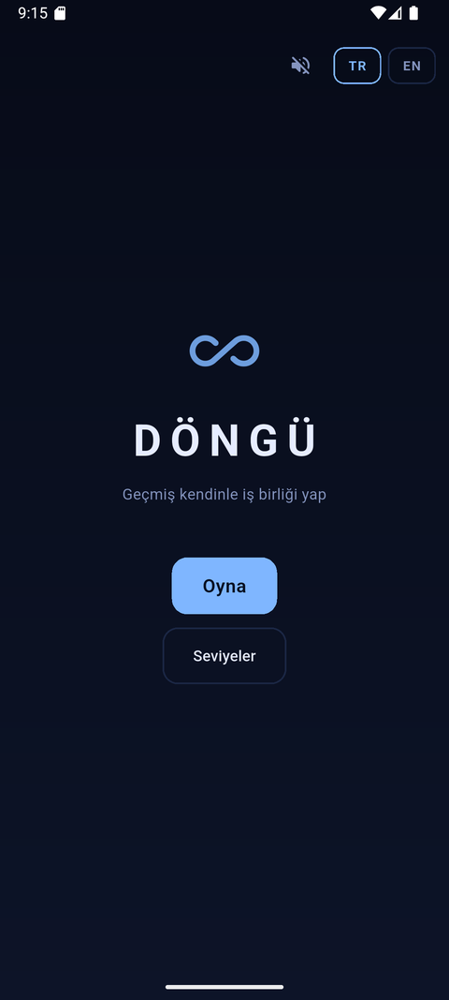
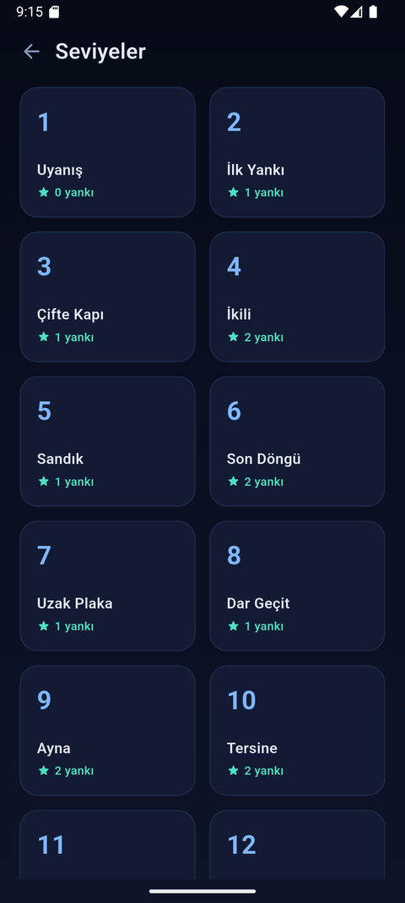
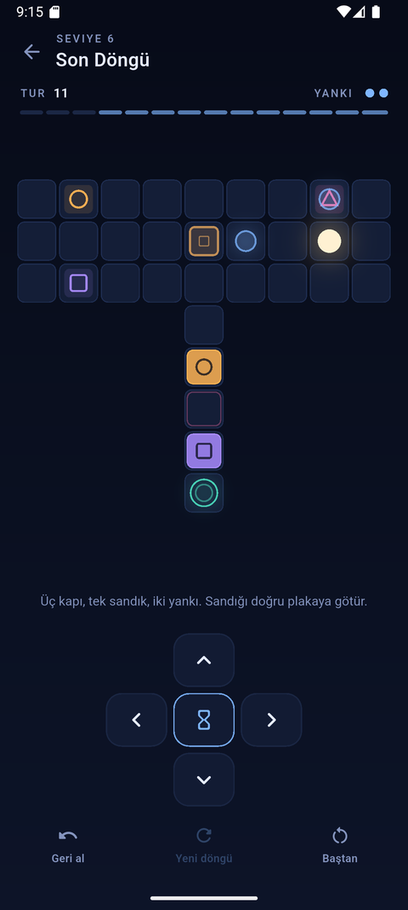
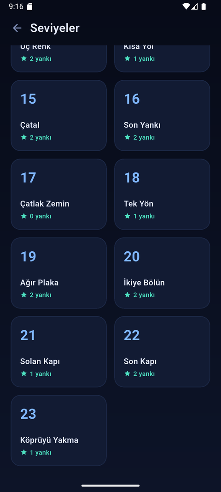

Geçmiş kendinle iş birliği yap
Turların sayılı. Turlar bitince döngü kapanır ve yaptığın her hamle bir yankı olarak yeniden oynanır — sen ise baştan başlarsın.
Nasıl oynanır
Tek kural: plakadan çekilirsen kapı kapanır
Plaka ve kapı
Kapıyı açık tutmak için plakanın üstünde biri durmalı. Sen gidersen kapanır — bu yüzden oraya geçmişini bırakırsın.
Sandık ve ağır plaka
Sandık plakayı hiç çekilmeden basılı tutar. Ağır plaka ise iki beden ister: iki yankını aynı kareye yığman gerekir.
Çatlak zemin ve solan kapı
Çatlak zemin üstünden çekilince çöker. Solan kapı yalnızca döngünün ilk turlarında açıktır. Yankın köprüyü senden önce yakabilir.
Oyundan
23 elle tasarlanmış seviye

Ana ekran
Seviye listesi
İki yankı, üç kapı
Üç mekanik bir arada Döngü kapandı
Döngü kapandıEnglish
Cooperate with your past self
Your turns are counted. When they run out the loop closes — and every move you made is replayed as an echo, while you start over. Nobody to stand on the plate that holds the gate open? Leave your past self there, one loop earlier.
23 hand-built levels. Turn-based, no timers. Fully offline, no permissions, no ads, no data collection. Turkish and English.